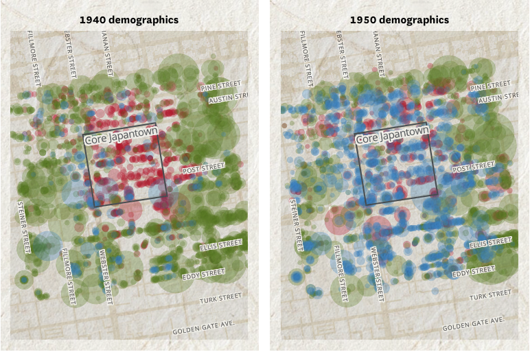

Nami Sumida
About me

I’m a data journalist at the San Francisco Chronicle where I use data and graphics to report on local government, elections, education and occasionally sports.
I am a NJ native living in San Francisco. In my spare time, I like to read and play ultimate frisbee.
SELECTED WORK

Single-stair buildings
How an obscure rule is one reason S.F. can’t build more housing

California Proposition 13
How S.F.’s iconic Painted Ladies explain California’s most important housing law

Evolution of Stephen Curry
Analysis of how Curry continues to evolve as an NBA superstar

Ranked-choice voting
How/if ranked-choice voting can be gamed

S.F. Japantown history
Measuring the impact of WW2 mass incarceration on the Japantown neighborhood

S.F. supervisor voting
Measuring how similarly supervisors vote on legislation to reveal voting coalitions

Great Highway proposition
Understanding the impact of a local ballot measure through manual data collection

Native-born population
Why California is increasingly made up of people born in California

UC transfer rates
Admissions rates for transfer students from California community colleges

ROI of California colleges
A tool to explore the return on investment of U.S. colleges

Warriors lineups
Analysis of the most popular Warriors lineups early in the season

California colleges
The most attended California colleges by race/ethnicity